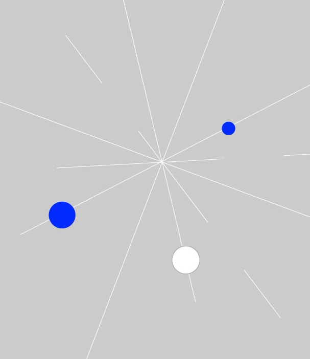

台積電近30年IT和AI發展
30年來，台積電智慧製造三度大變革，從2000年邁入全自動，
2012年發展出整合平臺和大數據分析，到了2016年進入了智慧製造第三階段，
這次大轉型不只是智慧製造生產模式的敏捷革新，更要靠AI展開全面數位轉型，擴及工作場所
現代化、數位供應鏈管理、高效能雲端運算和團隊協作創新。
資料來源：台灣積體電路製造股份有限公司，iThome整理，2021年1月
${ section_title.id }$
${ section_title.sub_title }$ ${ section_title.main_title }$

${ events_titles[0].id }$
${ events_titles[0].sub_title }$ ${ events_titles[0].main_title }$
${ events_titles[1].id }$
${ events_titles[1].sub_title }$ ${ events_titles[1].main_title }$
揭露e-foundry基本架構，以網路為基礎，建立了包括設計合作、工程合作和後勤合作系統等應用系統。DocuFast可下載全套台積電技術文件，以確保製程的一致性與包容性
永續指標下的風險管理指標首度增列資訊系統，這些永續指標應用也用於主要供應商管理
${ events_titles[2].id }$
${ events_titles[2].sub_title }$ ${ events_titles[2].main_title }$
在風險管理項目中，首度把「網路攻擊之風險」列入其他風險項目
${ events_titles[3].id }$
${ events_titles[3].sub_title }$ ${ events_titles[3].main_title }$
提出「精實與智慧生產」，台積電已整合了先進資料分析、智慧診斷、自我反應引擎和生產知識等技術，把工廠的生產模式，從「自動化」革新為「智能化」
提出「敏捷與智慧生產」，台積電除引進IoT、智慧化行動裝置，亦引進移動式機器人，來提高工廠生產效率
在網路攻擊風險中，新納入勒索軟體攻擊風險考量
TSMC-Online推出全方位製造資訊報表，客製化報表製作時間，也由數日縮短至五分鐘，快速滿足不同客戶對各階段製造資訊的多樣需求
台積電TSMC-Online可提供超過1萬600個不同的技術檔案及360個製程設計套件，一年下載量超過10 萬次
揭露智慧製造技術（AI、ML、專家系統、先進演算法），廣泛用於排程與派工、人員生產力、機臺生產力、製程與機臺控制、品質防禦、以及機器人控制。也整合智慧化行動裝置、IoT和移動式機器人，來結合智慧自動物料搬運系統，以強化晶圓生產資料收集與分析
在資訊技術安全之風險及管理措施上，揭露更多資安改進措施，例如建置機臺自動化掃毒及防毒系統；強化網路防火牆與網路控管防止病毒跨機臺及跨廠區擴散；依電腦類型建置端點防毒措施；開發及部署資安監控程式；加強電腦弱點掃描及軟體更新；加強釣魚郵件偵測及員工辨識能力測試；委託外部專家執行資安評鑑；建立一個整合的自動化資安維運平臺
${ events_titles[4].id }$
${ events_titles[4].sub_title }$ ${ events_titles[4].main_title }$
2020年12月揭露幾個【數位轉型重要發展領域】：用AI、大數據及尖端數位科技來打造智慧製造（如智能調機及機臺邊緣運算）、數位供應鏈管理、高效能混合雲端運算及服務（將適合業務上雲，如雲端CRM和雲端HCM）、工作場所現代化（如內部行動App、RPA、智能會議室等）、團隊協作（如AR/MR遠端協作、使用者為中心的團隊協作合作平臺）
TSMC內部雲端軟體開發平臺
整合DevOps流程和工具，支援上千名工程師開發。多數應用程式已經轉移到Kubernetes環境，也採用微服務架構來設計軟體系統。揭露下一代智慧工廠發展策略，要結合行動應用、MR、IoT、 大數據和AI來發展下一代AI工廠台積AI和ML四大應用布局
製程研發面：用AI協助理解高複雜高維度的製程開發挑戰。Fab量產面：用AI和ML分析感測資料和檢測影像，來進行品質檢驗、缺陷檢查，協助快速產生高品質的晶圓。業務面：市場動態分析大 量使用AI，也用來分析顧客行為模式。IT維運：利用AI協助IT內部複雜系統的維運，異常偵測等IT基礎架構團隊三大工作重心
運用各種基礎架構新技術（完整行動應用、導入協同合作和線上會議服務、雲端服務整合利用）協助企業數位轉型，資料中心透過軟體定義（虛擬化、容器化、基礎架構程式化）轉型成真正的私 有雲、基礎架構持續創新（導入新世代5G、IoT製造、AIOps技術）提出「精實與智慧生產」，台積電已整合了先進資料分析、智慧診斷、自我反應引擎和生產知識等技術，把工廠的生產模式，從「自動化」革新為「智能化」
提出「敏捷與智慧生產」，台積電除引進IoT、智慧化行動裝置，亦引進移動式機器人，來提高工廠生產效率
- ${ hashtag.title }$